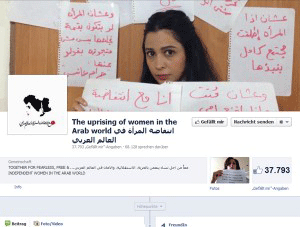

|
|
مبارزه سایبری زنان عرب برای رسیدن به برابری حقوقی
دو شنبه24 مهر 1391
شهرزاد نیوز: فعالان سایبری عرب، ملهم از «بهار عربی»، با راه اندازی صفحهای در شبکه اجتماعی فیسبوک تحت عنوان «انتفاضه زنان جهان عربی»، از اول اکتبر سال جاری مبارزه علیه «تبعیضات» را آغاز کردهاند که تا کنون شمار طرفداران این صفحه از 39 هزار و 250نفر نیز فراتر رفته است.

به گزارش روزنامه ترکی حریت، صد ها نفر، بیشتر آنان زنان و نیز شمار زیادی از مردان، با در دست داشتن نوشته هایی، عکس خود را روی این صفحه پست کرده اند.
دیاله حیدر، یکی از 4 زن سازمانده این کارزار، به خبر گزاری فرانسه گفت: ما انتظار استقبال از آن را داشتیم، چرا که میدانستیم زنان در انتظار چنین کارپایه ای برای بیان شکایات خود هستند، اما این همه استقبال شگفت انگیز است.
این ابتکار درست در زمانی به راه افناده است که در تونس و مصر، با روی کار آمدن اسلامگرایان، حقوق زنان به طور جدی به خطر افتاده است.
صفحه فیسبوکی قیام زنان جهان عرب را میتوانید اینجا ببینید.